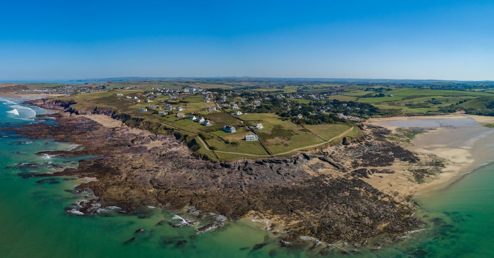

🚧UNDER CONSTRUCTION!🚧
This is a residents’-made archive of the history of Trebetherick (Cornish: Trebedrek), a village on the east side of the River Camel estuary in Cornwall.
Browse the sections above, search the site, or check out the timeline below.

The History of Trebetherick:
About The Museum
01/01/2025
Our home is between Polzeath and Rock. It extends west to Daymer Bay and Trebetherick Point, a sandy bay with rocky headland at the mouth of the Camel Estuary, a site of many ancient shipwrecks. ...
The Haven
02/01/1906
These PDFs were compiled by Brian and Jenny Oaten, as published in issues 237, 238, 239 of The Link magazine. Part 1 Part 2 Part 3 ...
The Wells
01/01/1930
Water supply in Trebetherick and Polzeath before 1930 was by hand dug wells as listed by Trebetherick Coastguard Ralph Tellam-Hocking. Wells In Trebetherick (21) Coast Guard House Elm Cottage Lowerdale The Haven Old Farm Higher Farm Trebetherick P.O. The Yard (now Mowhay garden) Roseleigh Minefield Trenain North Field St Enodoc Cottage Shortlands(now called Boskenna). Coolgrena Singleton Linkside Torquil Daymer House Glenarm Hillside Wells In Polzeath (17) Polzeath P.O. Valley View Polzeath House Polzeath Lodge Ivy Cottage Nook Edgecombe Field Old’s Garage Little...
Brea Hill
01/01/1906
Brea Hill (Cornish: Bre, meaning hill), pronounced “Bray Hill” is a round hill beside the River Camel. ...